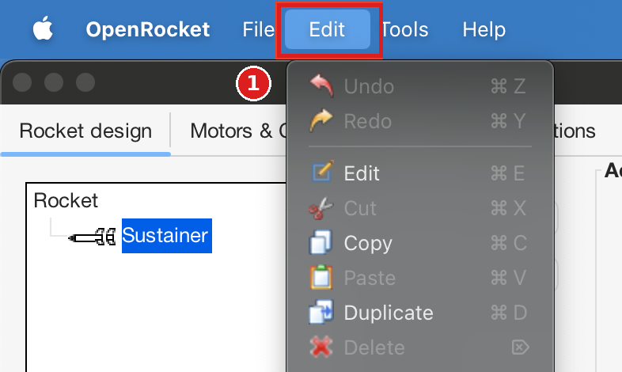

REHBER · 23 KASIM 2026
TEKNOFEST motorlarını OpenRocket'a ekleme
L1256, M1850 ve N3300 dosyalarını 5 adımda programa tanıtın.
[ARES-NAV fotoğrafı]
NASA SPACE APPS · 15 KASIM 2026
ARES-NAV: Mars'ta en güvenli rota
Gerçek NASA verileriyle Jezero Krateri'nde rota planla.
[Space Apps fotoğrafı]
NASA SPACE APPS · 14 KASIM 2026
Geride Kalanlar Ligi: Uzay çöpü değil, kahraman
Çocuklar için 13 kahramanlı bir uzay sitesi.
[Stant fotoğrafı]
TOPLULUK · EKİM–KASIM 2026
Dönemin ilk adımları: stanttan yönetim kuruluna
Stant, yeni üyeler, fidan dikimi, film gösterimi ve ilk yönetim kurulu.